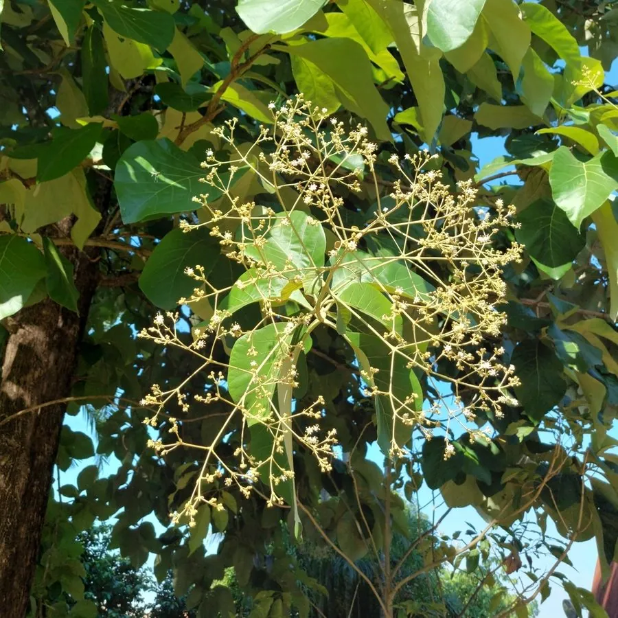

乔木 · 植物界
柚木 Tectona grandis

马鞭草科落叶大乔木，木材含油脂、耐腐防虫，是世界最名贵的硬木之一，原产东南亚，中国云南有引种。
- 分类
- 门被子植物门纲木兰纲目唇形目科马鞭草科属柚木属
- 栖息环境
- 海拔 1000 米以下的热带季雨林与河谷，喜高温多湿、干湿季分明
- 地理分布
- 原产印度、缅甸、泰国、老挝；中国云南、海南、广西、广东等地引种
- 保护级别
- 暂无评估；中国未列入国家重点保护野生植物名录
物种志
柚木为马鞭草科柚木属落叶大乔木，高 30–40 米，树干通直，树皮灰褐色、浅纵裂，幼枝四棱形并被星状毛。叶片大型，对生，宽卵形至椭圆形，长 30–60 厘米，表面粗糙、背面被毛，揉碎有特殊气味。花小，白色至淡黄色，组成顶生的大型圆锥花序，花期 6–8 月；果实为核果，球形，外包宿存的花萼，成熟时灰褐色，果期 10–12 月。
柚木原产印度、缅甸、泰国、老挝等东南亚国家，是热带季雨林中的重要树种，中国云南、海南、广西、广东等地有引种。它喜高温多湿和充足阳光，干季落叶，适宜深厚肥沃、排水良好的土壤，生长较快。木材含柚木油，耐腐、抗虫、不易变形，是造船、高级家具、地板与装饰的名贵用材；叶片可作包裹食物的材料，树皮可提取黄色染料。缅甸的天然柚木林世界闻名，柚木也因材质优良被广泛引种到热带各地。
形态与习性
- 株高30–40 m，树干通直
- 花期6–8 月，圆锥花序顶生
- 果期10–12 月，核果外包宿存花萼
- 光照极喜光，幼树需侧方庇荫
- 水分喜湿润，干季短暂落叶
- 土壤深厚肥沃、排水良好的壤土
- 主要用途造船、高级家具、地板，树皮作染料
趣味知识
- 柚木木材含柚木油，耐腐抗虫，在海水中浸泡多年也不易腐烂。
- 柚木是缅甸的国宝级树种，天然柚木林以材质优良闻名世界。
- 柚木叶片长可达 60 厘米，东南亚居民常用它包裹食物。
- 柚木在干季会落叶，落叶前叶色转为黄褐，是热带季雨林的季相标志。